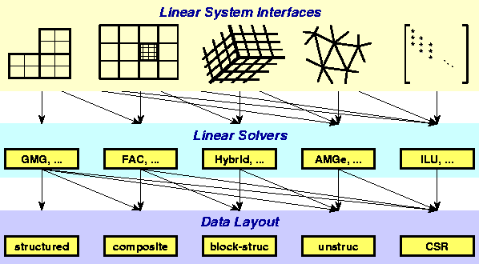

Figure: Graphic illustrating the notion of conceptual interfaces.
All of these elements are not necessarily in HYPRE.
The top row of Figure 2.1 illustrates a number of conceptual interfaces. Generally, the conceptual interfaces are denoted by different types of computational grids, but other application features might also be used, such as geometrical information. These conceptual interfaces are intended to represent the way that applications developers naturally think of their linear problem, and provide natural interfaces for them to pass the data that defines their linear system into HYPRE. Essentially, these conceptual interfaces can be considered convenient utilities for helping a user build a matrix data structure for HYPRE solvers and preconditioners. For example, applications that use structured grids (such as in the left-most interface in the Figure 2.1) typically view their linear problems in terms of stencils and grids. On the other hand, applications that use unstructured grids and finite elements typically view their linear problems in terms of elements and element stiffness matrices. Finally, the right-most interface is the standard linear-algebraic (matrix rows/columns) way of viewing the linear problem.
The second row of Figure 2.1 is a set of linear solver algorithms. Each linear solver group requires different information from the user through the conceptual interfaces. So, the geometric multigrid algorithm (GMG) listed in the left-most box, for example, can only be used with the left-most conceptual interface. On the other hand, the ILU algorithm in the right-most box may be used with any conceptual interface.
The third row of Figure 2.1 is a list of data layouts or matrix/vector storage schemes. The relationship between linear solver and storage scheme is similar to that of interface and linear solver.